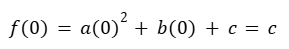
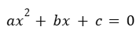
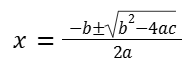

¿Dónde corta la parábola los ejes?
La parábola puede intersectar los ejes X y Y en uno, dos o ningún punto.
1. Corte en el eje Y:
- Ocurre cuando x = 0.
- Se calcula directamente evaluando:

Por tanto, la parábola siempre corta el eje Y en el punto (0,c).
- Corte con el eje X (raíces):
Se encuentra resolviendo la ecuación:

Métodos más comunes:
1. Factorización, si es posible.
2. Fórmula general:

Dependiendo del discriminante Δ = b² - 4ac:
- Si Δ > 0: dos sluciones reales → dos cortes.
- Si Δ = 0: una solución real → un solo corte (toca el eje).
- Si Δ < 0: sin soluciones reales → no corta el eje X.